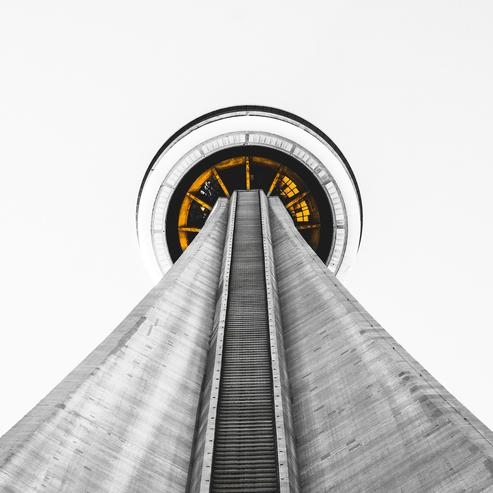
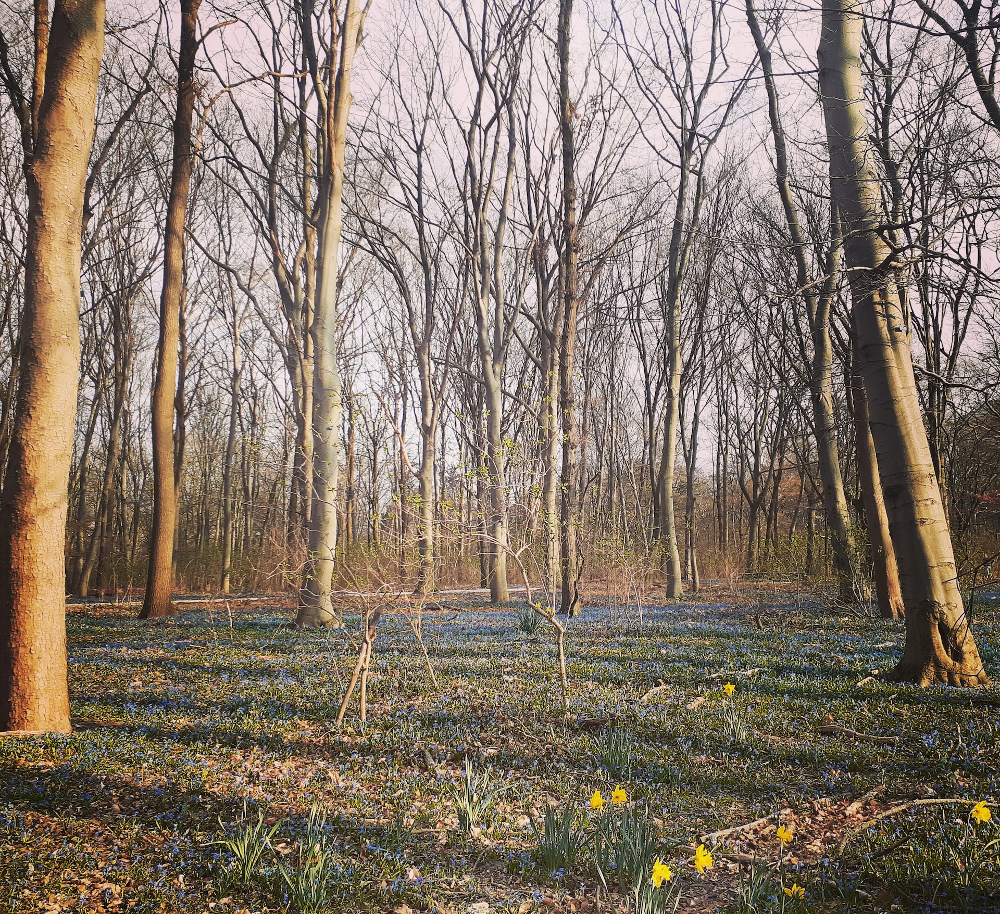
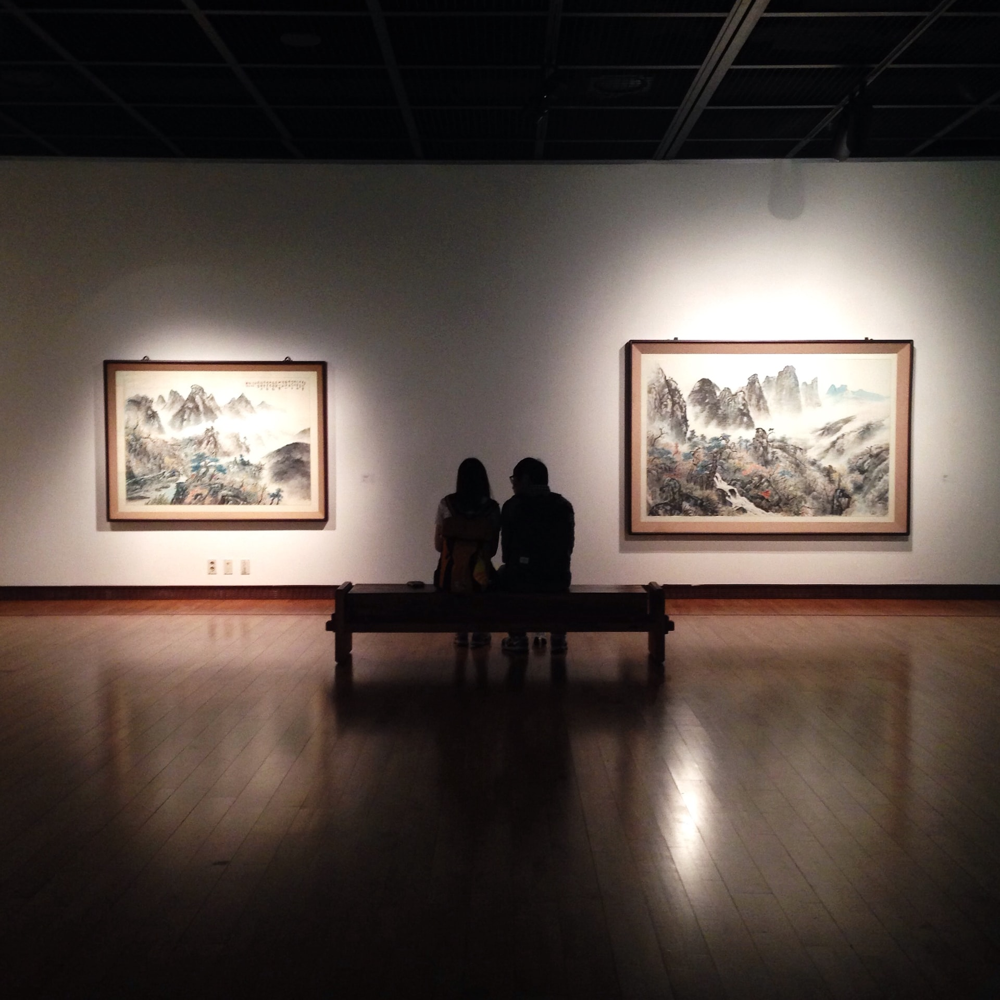

Visit the Reichstag building
Situated just north of the Brandenburg Gate, this building houses the German Parliament and was the seat of the Weimar Republic government.

Visit the Memorial of the Berlin Wall
The Berlin Wall Memorial is the central memorial site of German division, located in the middle of the capital. Situated at the historic site on Bernauer Strasse, it extends along 1.4 kilometers of the former border strip.

Visit the Pergamonmuseum
The Pergamonmuseum is a three-wing complex. The museum houses three of the Staatliche Museen zu Berlin’s collections: the Antikensammlung, Vorderasiatisches Museum, and the Museum für Islamische Kunst.